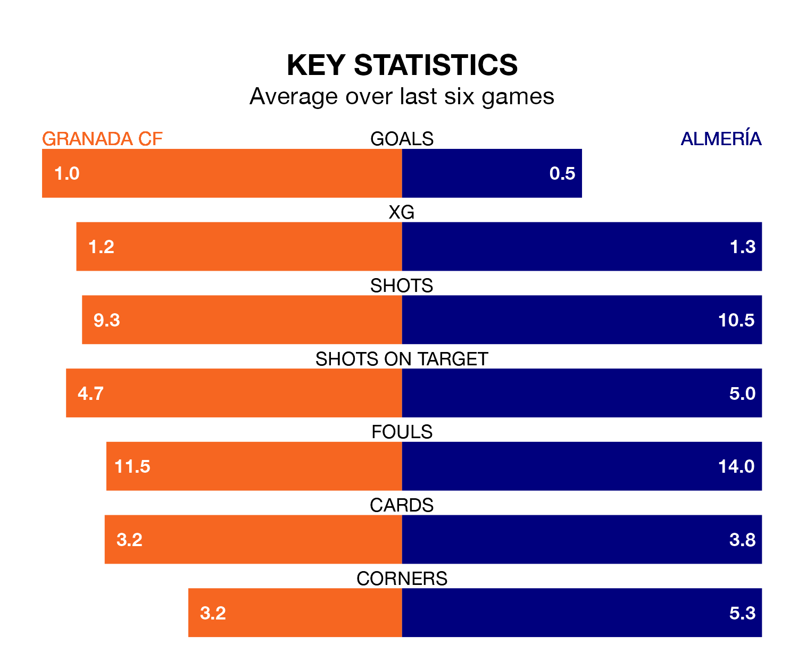

Sunday's match at the Estadio Nuevo Los Cármenes sees the league's two bottom sides face each other, as Granada CF host rock-bottom Almería.
Granada have picked up 13 points from their first 13 La Liga games, with two wins and seven draws.
That is six points more than Almería have collected, having won none and drawn seven.
Granada are in disappointing form in La Liga, with one win and two draws from their last six games.
With no wins and two draws over that period, Almería's form is worse – they have taken two points from 18, compared to the home team's five.
In the last 10 years, Granada and Almería have played each other on 10 occasions. Granada won four of them, Almería three, and they drew three times.
On average, Granada scored 1.1 goals and Almería 1.4 in those matches.
Their last meeting was on October 1, when they played out a 3-3 draw.
With 22 goals in 24 games so far this season, the visitors are scoring at below the league average rate with 0.9 goals per game. And they are conceding more than average, letting in 51 goals at a rate of 2.1 per game.
Granada are also below average scorers, with 1.1 goals per game, compared to a league average of 1.3. They have conceded 2.0 goals per game.
Granada's last match was on Sunday, a 3-3 draw against FC Barcelona, with Facundo Pellistri, Ignasi Miquel and Ricard Sánchez getting the goals for Granada.
Almería drew 0-0 with Athletic Club Bilbao last time out, on Monday.
Updated: 13:04 (UTC), 16/02/24